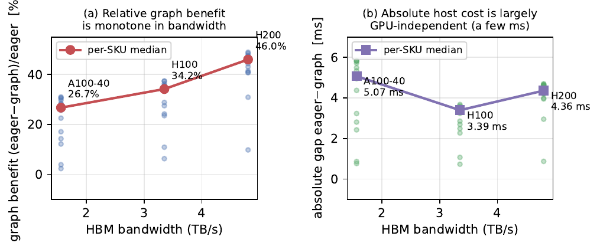

A closed-form model predicts one decode step by splitting it into a GPU-compute term and a host-overhead term. CUDA graphs are the production feature built to erase host overhead. Enabling graph capture removes a substantial cost — but measurement shows it is not the part the model calls ‘host’ that disappears. This page reports that discrepancy faithfully and characterizes what graphs actually remove.
When a language model writes one token, the GPU runs a long fixed list of small programs called kernels — about 394 of them per step for Llama-3.1-8B — and two costs accumulate: the GPU actually computing, and the host (the CPU and Python runtime) dispatching and bookkeeping each step. A prior mechanism model predicts the total by adding a GPU-compute term and a host term. CUDA-Graph capture records the whole kernel list once and replays it with a single launch that removes almost all the per-step host work, so the model implies that enabling graphs should subtract exactly its host term. This study runs that adversarial test on three datacenter GPUs.
Graph capture reduces the step by 26.7% on A100-40GB, 34.2% on H100, and 46.0% on H200. The fraction it removes increases monotonically with memory bandwidth — the qualitative gradient the model predicts: the same host cost is a larger slice of a smaller GPU floor on faster GPUs. That part is confirmed.
The model attributed the recoverable cost to a batch-growing scheduler residual. The measured gap behaves in the opposite way: it is roughly batch-constant at a few milliseconds, and it anti-correlates with the predicted residual (regression slope negative, R² = 0.17). In compute-bound long-context cells the gap collapses to zero, and slightly below.
On the common grid the model over-predicts the eager step by about 22% and the graph step by about 33%. The measured eager step is nearly flat in batch (about 9.5 to 10 ms on Hopper for N from 1 to 16), while the predictor's terms grow steeply. The host term needs recalibration for this regime; the gap is a real effect the decomposition omits.
Before running, we recorded a pass/fail kill-switch: if graphs do not recover the modeled host residual, report a bounded negative characterization rather than a confident wrong story. The kill-switch fired. We name the removed cost a non-overlapped host term on mechanistic grounds; we did not isolate GPU work with hardware counters, and we do not over-claim.
No background is assumed. Four ideas are sufficient to follow the rest of the page: what a decode step is, what host overhead means, what a latency mechanism model is, and what CUDA-Graph capture does. Each is developed in plain language before any vLLM-specific name appears.
To write the next token, the model runs its full forward pass once. On the GPU that means, for each of Llama-3.1-8B's 32 layers, four matrix multiplications for the projections, one attention computation, and a handful of small elementwise operations, plus a final output projection and a sampler. Each of these is a kernel — a small program the GPU runs to completion before the next one begins. Summed across the network, one decode step launches about 394 kernels, and the model repeats this tens of thousands of times to write a paragraph.
While the GPU executes kernels, a CPU-side host — the Python scheduler and the runtime — is busy too: deciding which requests to serve, allocating memory, and issuing the launch command for each of those 394 kernels. A step's wall-clock time is therefore a race between two costs: the GPU-compute time of running the kernels, and the host time of deciding what to run and instructing the GPU to run it. When things go well, the host work for the next step hides in the shadow of the current step's GPU work; when they do not, that host work spills onto the critical path and the GPU waits for Python.
Whatever host work does not fit in the shadow becomes exposed wall-clock time, and that exposed host cost is exactly what CUDA graphs attack.
The model under test is a closed-form predictor built earlier. It writes one step as a single formula, and the point of the formula is that the GPU efficiencies are architecture-derived rather than fitted to served latency, so the model should generalize.
In words, the model takes the larger of the GPU-compute time $T_{\text{blocks}}$ (a roofline sum over every kernel) and the dispatch floor $N_{\text{kern}}\,t_{\text{launch}}$ (the cost of issuing 394 launches), then adds an exposed scheduler residual $\alpha(N)\,S(N)$ (the host bookkeeping that did not fit in the shadow) and a small sampling term $T_{\text{samp}}$. The paper does not retrain anything; it asks whether the existing host decomposition is correct.
In eager mode, Python issues all 394 launches on every step and the scheduler runs on the critical path. CUDA-Graph capture records the fixed kernel dependency graph once and replays it with a single launch, removing the per-step launch cost and shrinking the host span to bookkeeping the runtime can pipeline a step ahead. The GPU still runs the same 394 kernels, because graph replay removes launch overhead, not compute, so $T_{\text{blocks}}$ is identical in both modes by construction.
The method isolates one decode step with a version-robust subtraction over the high-level generation API, so it survives internal engine refactors. Four hypotheses and one kill-switch were recorded before the measurements were taken — which is what makes the eventual negative result a finding rather than a surprise.
The per-step cost is recovered by a subtraction that cancels the fixed prefill and startup overhead, so the result is the decode work alone.
A batch of $N$ prompts of length ctx generates $g$ tokens, with exactly $g$ forced by the ignore-eos flag. The one-token wall captures prefill plus fixed overhead; the difference isolates the $g-1$ decode steps; dividing yields the per-step cost. The measurement runs in two separate processes (eager on and off) over a grid of batch size $N \in \{1,2,4,8,16,32\}$ and context $\{512, 2048, 8192\}$, taking 15 timed repetitions per cell. Because the subtraction is defined over the high-level $\texttt{LLM.generate}$ entry point rather than an internal step function, it remains valid across vLLM engine refactors.
Two honesty controls protect the result. The predictor's GPU and dispatch terms are left untouched, and only the one empirical host floor is set to a disclosed engine-context value, $S(1) = 1.30$ ms (not the shipped generation-protocol floor of 14 to 24 ms); the gap and the cross-SKU ordering are shown to be insensitive to its exact value because the GPU branch dominates. A 95% confidence interval is bootstrapped on every per-SKU gap (5000 resamples, fixed seed), so a near-zero gap — the kill-switch condition — is interval-bounded rather than asserted.
On the common five-by-three grid (batch up to 16, the grid all three SKUs share), graph capture removes a substantial host cost the model predicts is invisible. The table reports measured medians with bootstrap 95% confidence intervals that exclude zero on every SKU. The gap column is the eager-minus-graph difference; benefit is the gap as a fraction of the eager step.
| SKU | HBM BW (TB/s) | eager (ms) | graph (ms) | gap (ms) [95% CI] | benefit |
|---|---|---|---|---|---|
| H200 | 4.80 | 9.72 | 5.29 | 4.36 [3.99, 4.63] | 46.0% |
| H100 | 3.35 | 9.83 | 6.53 | 3.39 [2.49, 3.54] | 34.2% |
| A100-40 | 1.56 | 19.23 | 13.97 | 5.07 [3.23, 5.49] | 26.7% |
The relative graph benefit rises monotonically with HBM bandwidth, from 26.7% on A100-40GB through 34.2% on H100 to 46.0% on H200, confirming H3 on the three measured SKUs. The mechanism is as predicted: the absolute host cost removed is largely bandwidth-independent at a few milliseconds on every SKU, so it forms a larger fraction of the smaller, faster GPU floor on bandwidth-rich SKUs. The measured figure below shows both faces of this — the relative benefit climbing with bandwidth (left), and the absolute gap staying a few milliseconds regardless of GPU (right).

Measured graph benefit across A100-40GB / H100 / H200. Left: relative benefit (eager−graph)/eager is monotone in HBM bandwidth — 26.7% → 34.2% → 46.0%. Right: the absolute gap is largely GPU-independent at a few milliseconds (5.07 / 3.39 / 4.36 ms). Faint points are per-cell measurements; the line is the per-SKU median.
Relative graph benefit versus HBM bandwidth — monotone, so H3 is confirmed on the three measured SKUs.
The model attributed the recoverable cost to the batch-growing scheduler residual $S(N)$, and the measurement falsifies that attribution. Regressing the measured per-cell gap on the predicted $S(N)$ gives a negative slope; on the common grid the slope is −0.43 with intercept 4.82 ms, R² = 0.17, r = −0.41. The recovered amount is roughly batch-constant — H200 holds 4.2 to 4.7 ms from batch 1 to 16 while $S(N)$ would climb from 1.3 to 4.3 ms — and it collapses toward zero, and slightly below, in compute-bound long-context cells (−0.6 ms for H200 at batch 32 / ctx 8192). Graphs therefore remove a host cost whose batch-shape is the opposite of the modeled residual.
The predictor does not predict this controlled decode step accurately, and it over-predicts in eager and in graph mode alike. Eager-mode MAPE against the full prediction is 21.9% pooled on the common grid (15.0% on H100, 19.0% on H200, 31.8% on A100-40GB), with a signed error of +13.1%. Graph-mode MAPE against the GPU-only prediction is 33.2%, because removing the host term drops the measurement about 33% below the GPU-only floor — meaning the closed-form GPU branch itself over-predicts this regime at this vLLM version. Since both modes are over-predicted by a similar margin, the eager-minus-graph gap remains a robust real effect even though the absolute level needs recalibration.
An RTX 5090 run — not a predictor SKU, reported only to validate the benchmark and bound the magnitude — shows the same direction: graph capture reduces the step by 0.70 to 1.07 ms (6.4 to 9.0%), and the gap grows with batch, from +0.81 ms at batch 1 to +1.07 ms at batch 4. No predictor-accuracy claim is drawn from Blackwell, because it lies outside the predictor's SKU table.
The value of the result divides cleanly by audience. For systems researchers it is a measured counterexample to a common attribution; for model builders it is a precise statement of where a roofline mechanism model is trustworthy and where it requires recalibration.
In steady-state LLM decode, CUDA graphs do not recover a kernel-dispatch floor (already hidden in the GPU shadow) and they do not recover a batch-growing scheduler residual. They recover a roughly batch-constant, non-overlapped per-step host cost that disappears in compute-bound cells. A latency model that attributes graph savings to dispatch or to a scheduler curve has a measured counterexample here.
The bandwidth gradient is real and predictable: graph benefit scales with HBM bandwidth, so the same engineering yields more on faster GPUs. The absolute decode-step level from a roofline mechanism model, however, needs regime recalibration: a 22% over-prediction in this controlled, never-fit-on configuration is the honest accuracy a builder should expect before tuning.
A companion deepdive extends the same mechanism model in a different direction, asking how far its fit-free GPU-compute shape travels across model families rather than across execution modes. Read Deepdive #4: How far does a fit-free GPU-efficiency model travel across model families?
The claims are deliberately bounded. Each item names a specific way the result could be over-read and the precise scope that remains valid.
The conclusions hold for Llama-3.1-8B in BF16 on the single-GPU PACE SKUs H100, H200, and A100-40GB, over the common five-by-three grid they share, with the RTX 5090 included only as a Blackwell smoke check. The central finding — that graph capture removes a batch-constant non-overlapped host cost rather than the modeled scheduler residual — is the part expected to generalize beyond this grid.